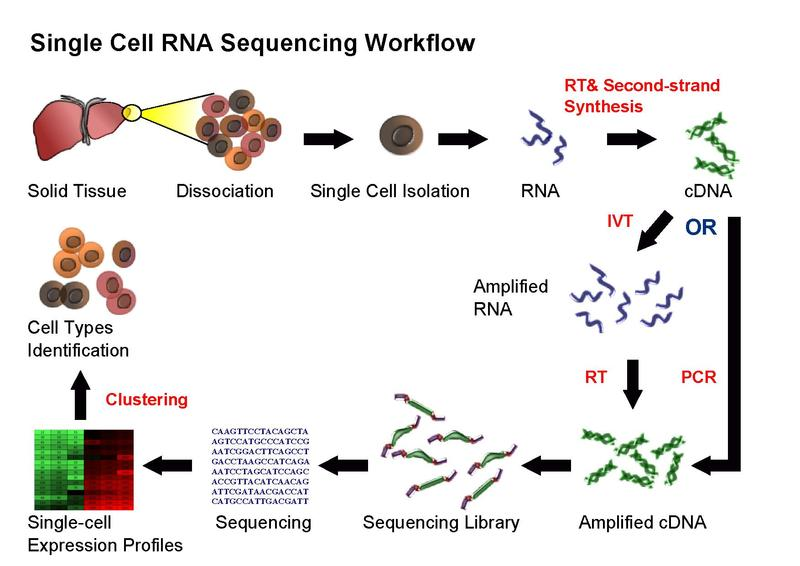
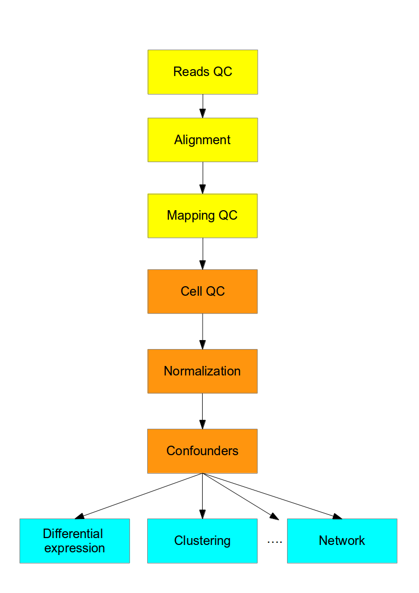

단일 세포 RNA-seq 소개#
벌크 RNA-seq#
00년대 후반에 마이크로어레이를 대체하는 주요 혁신이었으며 이후 널리 사용되었습니다.
대규모 세포 집단에서 각 유전자의 평균 발현 수준을 측정합니다.
비교 전사체학(예: 다른 종의 동일한 조직 샘플)에 유용합니다.
앙상블의 발현 특징을 정량화하는 데 유용합니다(예: 질병 연구).
이질적인 시스템(예: 초기 발생 연구, 복잡한 조직(뇌))을 연구하기에는 불충분합니다.
유전자 발현의 확률적 특성에 대한 통찰력을 제공하지 않습니다.
scRNA-seq#
2009년 Tang 등이 처음 발표한 새로운 기술입니다.
새로운 프로토콜과 낮은 시퀀싱 비용으로 더 접근하기 쉬워진 ~2014년까지 널리 인기를 얻지 못했습니다.
세포 집단에서 각 유전자의 발현 수준 분포를 측정합니다.
세포 특이적 전사체 변화가 중요한 새로운 생물학적 질문을 연구할 수 있게 해줍니다(예: 세포 유형 식별, 세포 반응의 이질성, 유전자 발현의 확률성, 세포 간 유전자 조절 네트워크 추론).
데이터 세트는 \(10^2\)에서 \(10^6\)개 세포까지 다양하며 매년 크기가 증가합니다.
현재 SMART-seq2(Picelli, 2013), CELL-seq(Hashimshony, 2012), Drop-seq(Macosko, 2015) 등 여러 가지 다른 프로토콜이 사용되고 있습니다.
Fluidigm C1, Wafergen ICELL8, 10X Genomics Chromium을 포함한 상용 플랫폼도 사용할 수 있습니다.
벌크 RNA-seq의 여러 계산 분석 방법을 사용할 수 있습니다.
대부분의 경우 계산 분석에는 기존 방법의 수정 또는 새로운 방법의 개발이 필요합니다.
워크플로우#

전반적으로 실험적인 scRNA-seq 프로토콜은 벌크 RNA-seq에 사용되는 방법과 유사합니다. 다음 장에서 가장 일반적인 접근 방식 중 일부를 논의할 것입니다.
계산 분석#
이 과정은 scRNA-seq 실험에서 얻은 데이터의 계산 분석에 관한 것입니다. 첫 번째 단계(노란색)는 모든 고처리량 시퀀싱 데이터에 공통적입니다. 이후 단계(주황색)는 scRNASeq의 기술적 차이를 해결하기 위해 기존 RNASeq 분석 방법과 새로운 방법을 혼합해야 합니다. 마지막으로 생물학적 해석(파란색)은 scRNASeq를 위해 특별히 개발된 방법으로 분석해야 합니다.

Luecken and Theis의 최근 scRNA-seq 분석 리뷰를 권장합니다.
오늘날에는 위 순서도의 하나 이상의 단계를 수행할 수 있는 여러 가지 다른 플랫폼도 있습니다. 가장 인기 있는 플랫폼은 다음과 같습니다.
Seurat는 단일 세포 RNA-seq 데이터의 QC, 분석 및 탐색을 위해 설계된 R 패키지입니다.
Bioconductor는 단일 세포 데이터 분석용 패키지를 포함하여 고처리량 유전체학 데이터 분석을 위한 오픈 소스, 공개 개발 R 프로젝트입니다.
Scanpy는 Seurat와 유사한 Python 패키지입니다.
과제#
벌크와 단일 세포 RNA-seq의 주요 차이점은 각 시퀀싱 라이브러리가 세포 집단이 아닌 단일 세포를 나타낸다는 것입니다. 따라서 다른 세포(시퀀싱 라이브러리)의 결과 비교에 상당한 주의를 기울여야 합니다. 라이브러리 간 불일치의 주요 원인은 다음과 같습니다.
증폭(최대 100만 배)
한 세포에서는 중간 정도의 발현 수준으로 관찰되지만 다른 세포에서는 감지되지 않는 유전자 ‘드롭아웃’(Kharchenko, 2014).
두 경우 모두 RNA가 단일 세포에서만 유래하므로 전사체의 시작 양이 적기 때문에 불일치가 발생합니다. 전사체 포획 효율성을 개선하고 증폭 편향을 줄이는 것은 현재 활발한 연구 분야입니다. 그러나 이 과정에서 보게 되겠지만 적절한 정규화 및 수정을 통해 이러한 문제 중 일부를 완화할 수 있습니다.